8. Kết nối SQL với Excel phục vụ báo cáo tự động#
8.1. From SQL server#
Mở
Excel >> Data >> From other sources >> From SQL server. Gõ tên địa chỉ Server names, user, password
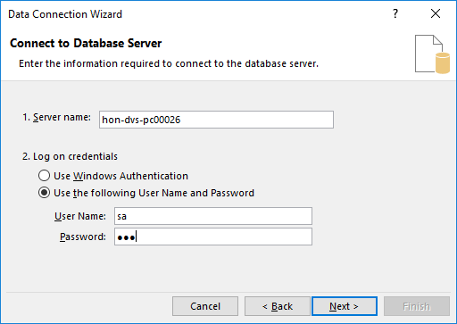
Chọn
Nextliên tục đến khi hiển thị ra thông tin như ảnh dưới đây: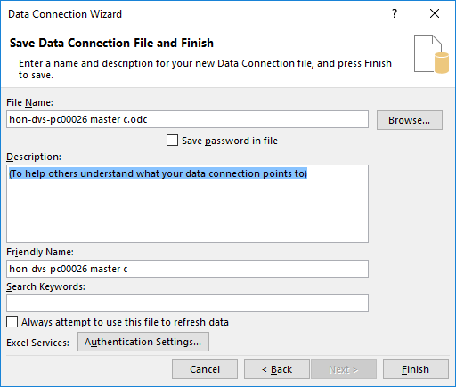
Chọn
Finishđể ra màn hình chọnProperties
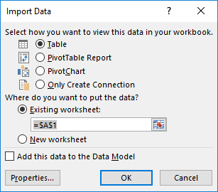
Chọn
Definition>> phầnCommand typechọn SQL >> gõ câu lệnh SQL truy vấn dữ liệu
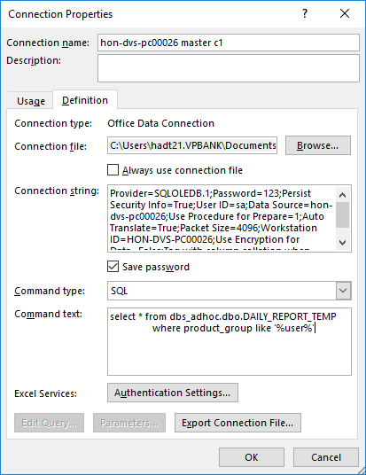
Lưu ý: Có thể chọn
Save passwordđể khi gửi file cho client có thể tự refresh file khi dữ liệu trên SQL thay đổi.
8.2. Kết nối SQL với Microft Query#
From other sources >> From Microsoft Query >> New Data source
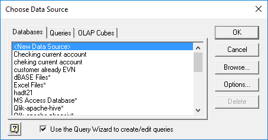
Chọn tên đặt cho source kết nối, chọn driver là SQL server để đảm bảo client có thể refresh được dữ liệu.
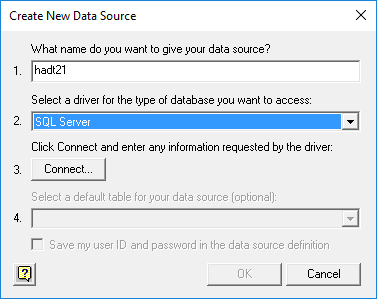
Chọn
Connect>> gõ tên Server muốn kết nối >> Bỏ chọnUse Trusted Connectionđể chọn User và Password. Chọnsave Passwordcho những lần kết nối sau
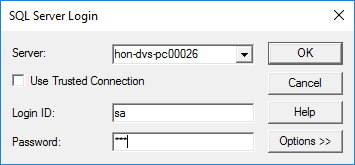
Chọn
All columntrong phầnQuery Wizard
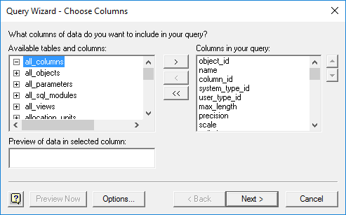
Chọn
Nextliên tục đến khi hiển thị ra đến phần chọnReturn data to Microsoft >> Finish.
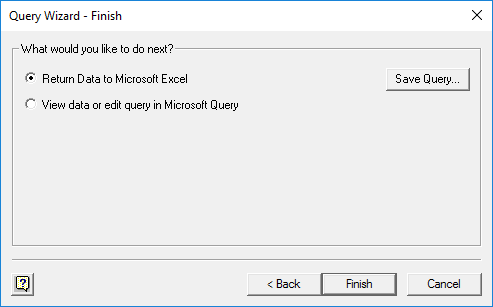
Phần
Properties >> Commandtext gõ câu lệnh SQL truy vấn, **phần parameter cần để =? **
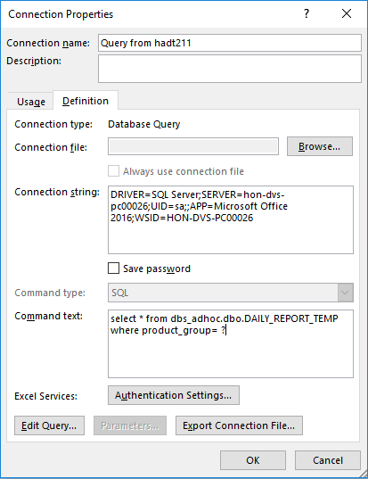
Điền
parameter value, lựa chọn vị trí ô để gõ dữ liệufilter>> chọn ôUser this valuevàRefresh automatically.
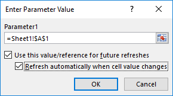
8.3. Chỉnh sửa cậu lệnh truy vấn SQL sau khi đã tạo connection#
Chọn:
Data >> Connections >> Properties >> Definitionđể sửa câu lệnh truy vấn ở phầnCommand text.
Lưu ý: Sử dụng kết nối SQL và Excel sẽ cho phép tạo các báo cáo động trong Excel khi làm việc với SQL